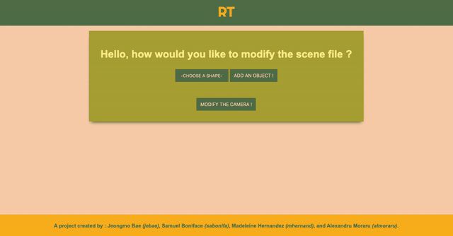
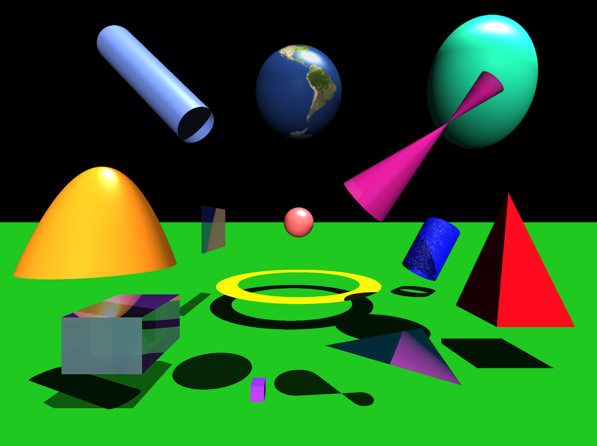

A collaboration among four peers
The project, known as RT, was a group project between me and three other 42 peers. The workload was split so that each member tapped further into the aspects of programming that interests them.
Naturally, I worked on the mini full-stack XML-form modifier. Our project was exculsively coded in C, except the user interface. The project was given an XML file with one camera, one or more lights, and shapes as xml objects. The UI gave the user the opportunity to add a new object to the XML file without having to manually type all the XML tags. I used HTML and CSS to create the different forms for the UI, since each object had it's own requirements. There were two types of forms, one with textures and one withouut since all objects were not programmed to handle texture mapping.
I used Express.js to create a local-server that would allow me access to modify local files. To make the modifications, I used vanilla Javascript and JSON to update the XML-file the user gave. The user had the option to either add any new object to the scene or modify the orientation of the camera.
This is a scene that includes almost all (90%) of the functionalities that were available in our Ray Tracer.